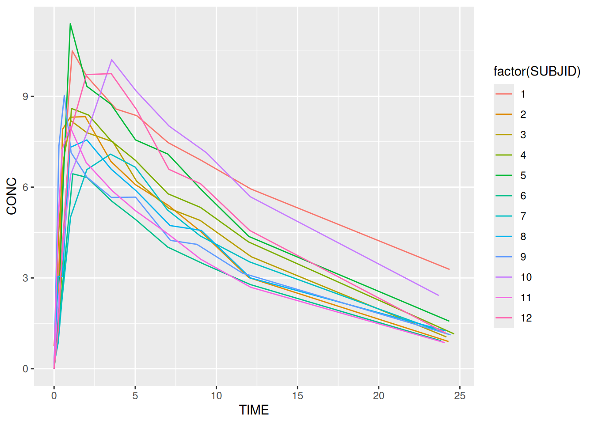
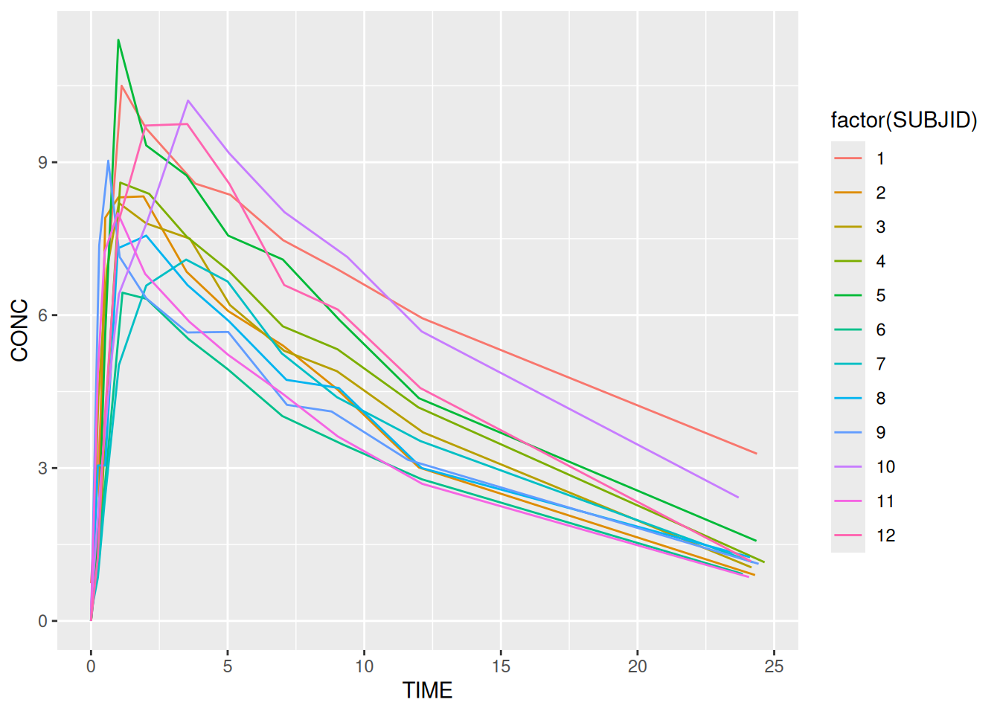
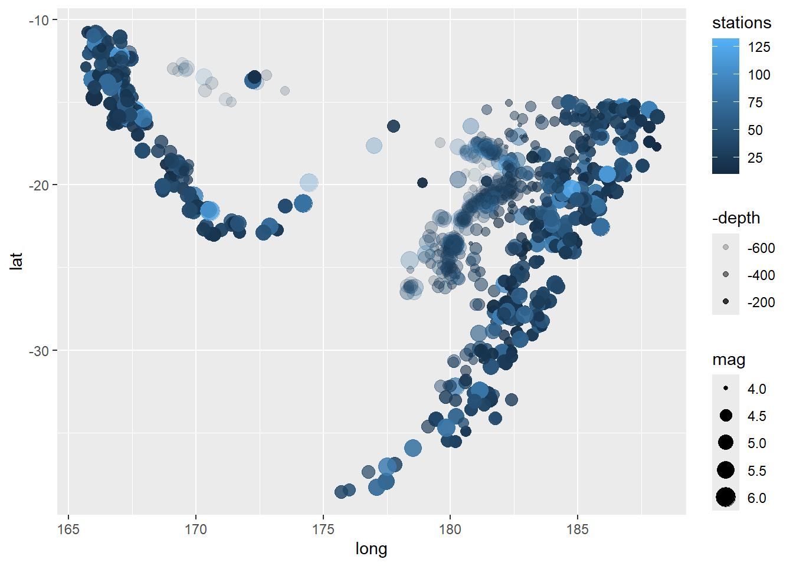
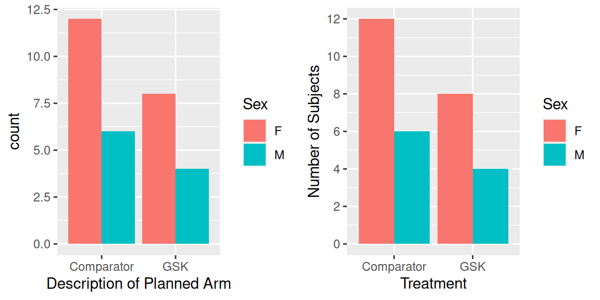
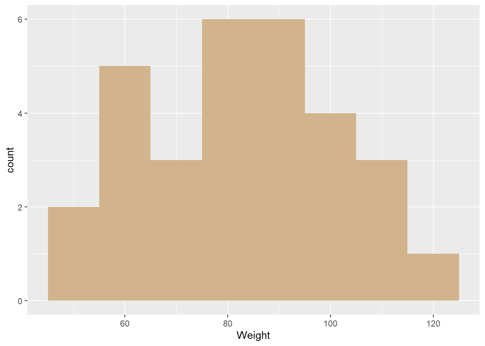
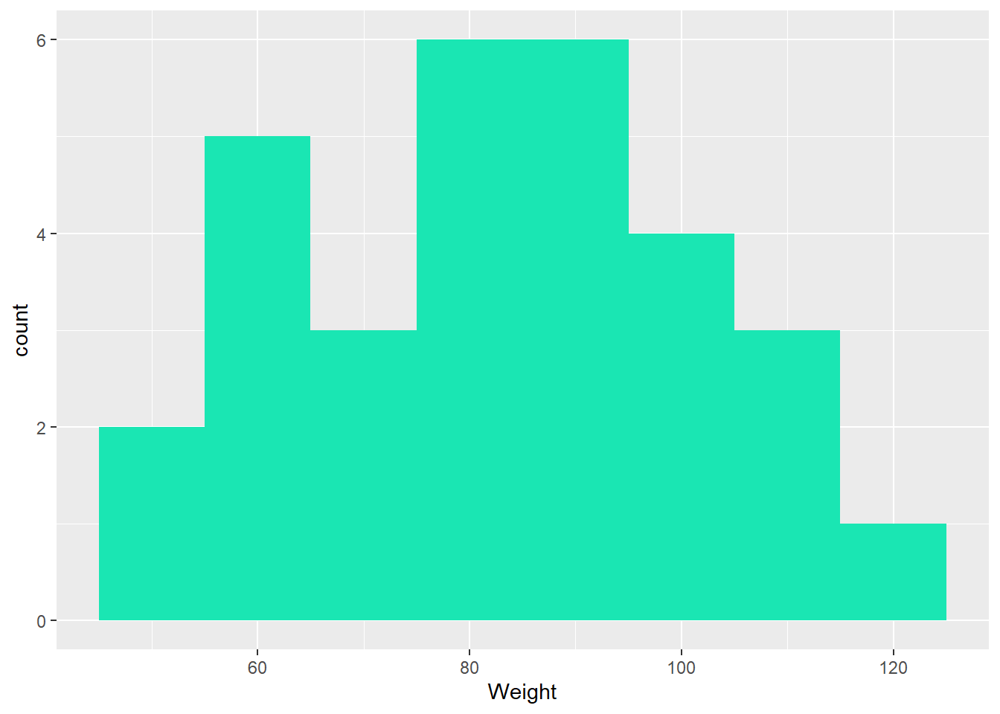
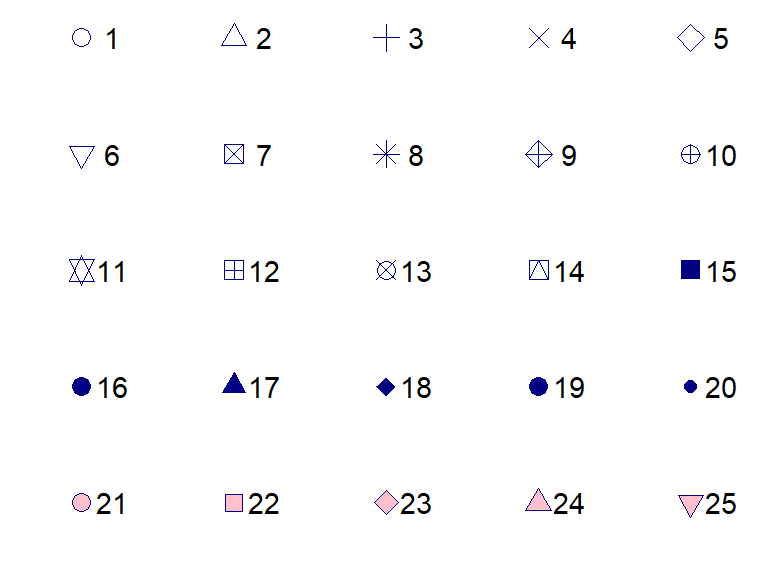
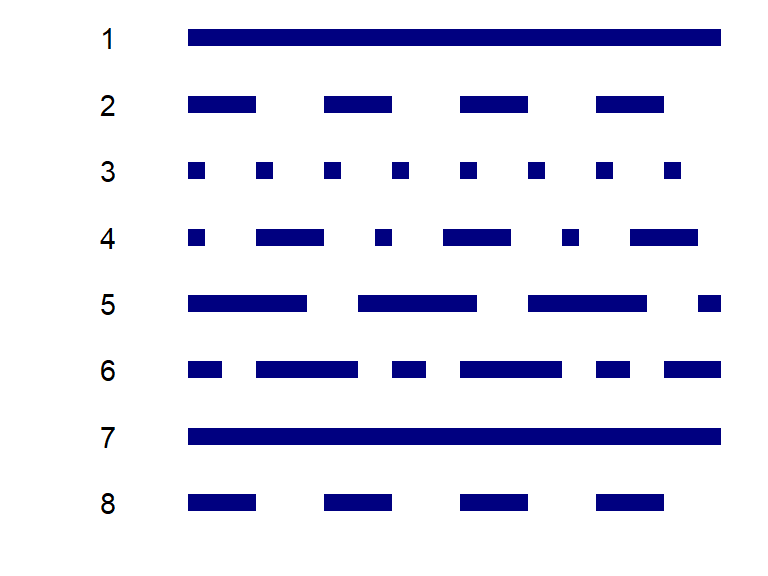
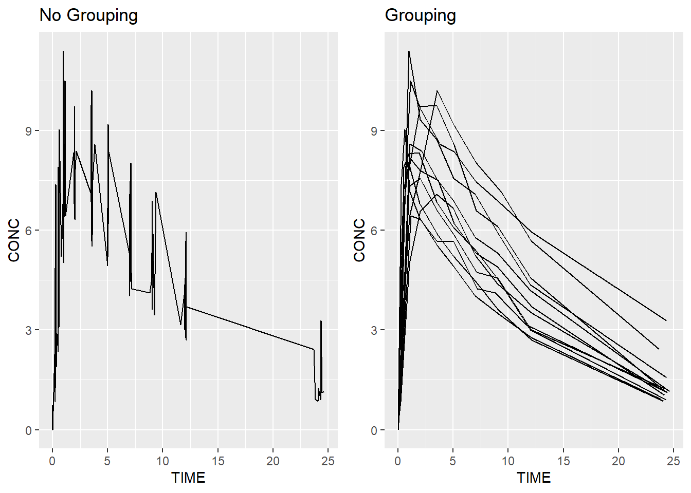
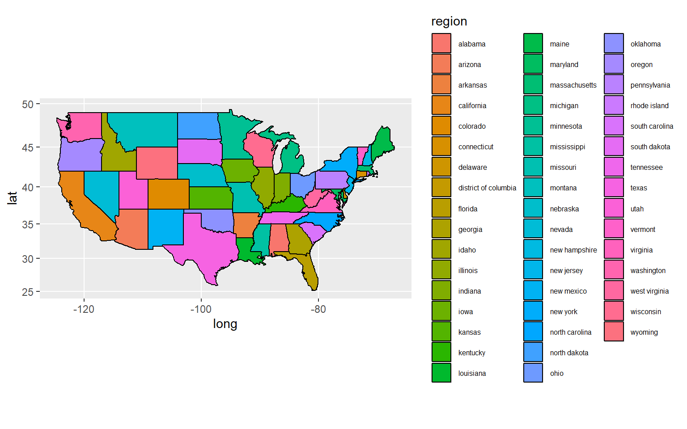

ggplot(data = theoph,
aes(x = TIME, y = CONC, colour = factor(SUBJID))) +
geom_line()
The power of ggplot2 comes from the ease with which we can map features of our data (i.e. information contained within variables) onto plot elements. As discussed in the previous section variables can be mapped onto any of the following elements:
Aesthetic mappings are easy to make and ggplot2 has a number of built-in defaults to handle different data types. Most aesthetics work with either continuous or categorical data. Some, eg shape only work with categorical data. To make an aesthetic mapping we call the aes function. Each of the mappings above can be defined as arguments to the function. Variables in the data act as inputs. Here’s an example using some infamous theophylline data.
Note the use of factor. This turns SUBJID from a continuous into a categorical variable. It is required to ensure that we get a distinct colour for each, instead of gradation. It also ensures that each subject is plotted as a different line.
ggplot(data = theoph,
aes(x = TIME, y = CONC, colour = factor(SUBJID))) +
geom_line()
And here’s a nice example using multiple aesthetics with the in-built dataset, quakes.
| lat | long | depth | mag | stations |
|---|---|---|---|---|
| -20.42 | 181.62 | 562 | 4.8 | 41 |
| -20.62 | 181.03 | 650 | 4.2 | 15 |
| -26.00 | 184.10 | 42 | 5.4 | 43 |
| -17.97 | 181.66 | 626 | 4.1 | 19 |
| -20.42 | 181.96 | 649 | 4.0 | 11 |
| -19.68 | 184.31 | 195 | 4.0 | 12 |
ggplot(data = quakes,
aes(x = long, y = lat, alpha = -depth, colour = stations, size = mag)) +
geom_point()
In order to change the default aesthetic mappings, we need to add a scale_* layer. The scale layers control
There are many different scale layers available:
[1] "scale_alpha" "scale_alpha_binned"
[3] "scale_alpha_continuous" "scale_alpha_date"
[5] "scale_alpha_datetime" "scale_alpha_discrete"
[7] "scale_alpha_identity" "scale_alpha_manual"
[9] "scale_alpha_ordinal" "scale_color_binned"
[11] "scale_color_brewer" "scale_color_continuous"
[13] "scale_color_date" "scale_color_datetime"
[15] "scale_color_discrete" "scale_color_distiller"
[17] "scale_color_fermenter" "scale_color_gradient"
[19] "scale_color_gradient2" "scale_color_gradientn"
[21] "scale_color_grey" "scale_color_hue"
[23] "scale_color_identity" "scale_color_manual"
[25] "scale_color_ordinal" "scale_color_steps"
[27] "scale_color_steps2" "scale_color_stepsn"
[29] "scale_color_viridis_b" "scale_color_viridis_c"
[31] "scale_color_viridis_d" "scale_colour_binned"
[33] "scale_colour_brewer" "scale_colour_continuous"
[35] "scale_colour_date" "scale_colour_datetime"
[37] "scale_colour_discrete" "scale_colour_distiller"
[39] "scale_colour_fermenter" "scale_colour_gradient"
[41] "scale_colour_gradient2" "scale_colour_gradientn"
[43] "scale_colour_grey" "scale_colour_hue"
[45] "scale_colour_identity" "scale_colour_manual"
[47] "scale_colour_ordinal" "scale_colour_steps"
[49] "scale_colour_steps2" "scale_colour_stepsn"
[51] "scale_colour_viridis_b" "scale_colour_viridis_c"
[53] "scale_colour_viridis_d" "scale_continuous_identity"
[55] "scale_discrete_identity" "scale_discrete_manual"
[57] "scale_fill_binned" "scale_fill_brewer"
[59] "scale_fill_continuous" "scale_fill_date"
[61] "scale_fill_datetime" "scale_fill_discrete"
[63] "scale_fill_distiller" "scale_fill_fermenter"
[65] "scale_fill_gradient" "scale_fill_gradient2"
[67] "scale_fill_gradientn" "scale_fill_grey"
[69] "scale_fill_hue" "scale_fill_identity"
[71] "scale_fill_manual" "scale_fill_ordinal"
[73] "scale_fill_steps" "scale_fill_steps2"
[75] "scale_fill_stepsn" "scale_fill_viridis_b"
[77] "scale_fill_viridis_c" "scale_fill_viridis_d"
[79] "scale_linetype" "scale_linetype_binned"
[81] "scale_linetype_continuous" "scale_linetype_discrete"
[83] "scale_linetype_identity" "scale_linetype_manual"
[85] "scale_linewidth" "scale_linewidth_binned"
[87] "scale_linewidth_continuous" "scale_linewidth_date"
[89] "scale_linewidth_datetime" "scale_linewidth_discrete"
[91] "scale_linewidth_identity" "scale_linewidth_manual"
[93] "scale_linewidth_ordinal" "scale_radius"
[95] "scale_shape" "scale_shape_binned"
[97] "scale_shape_continuous" "scale_shape_discrete"
[99] "scale_shape_identity" "scale_shape_manual"
[101] "scale_shape_ordinal" "scale_size"
[103] "scale_size_area" "scale_size_binned"
[105] "scale_size_binned_area" "scale_size_continuous"
[107] "scale_size_date" "scale_size_datetime"
[109] "scale_size_discrete" "scale_size_identity"
[111] "scale_size_manual" "scale_size_ordinal"
[113] "scale_type" "scale_x_binned"
[115] "scale_x_continuous" "scale_x_date"
[117] "scale_x_datetime" "scale_x_discrete"
[119] "scale_x_log10" "scale_x_reverse"
[121] "scale_x_sqrt" "scale_x_time"
[123] "scale_y_binned" "scale_y_continuous"
[125] "scale_y_date" "scale_y_datetime"
[127] "scale_y_discrete" "scale_y_log10"
[129] "scale_y_reverse" "scale_y_sqrt"
[131] "scale_y_time" The scale functions can be broken down into three components:
scale_ piece - that identifies the function as a scale functionEvery time we map to an aesthetic, a default scale is applied. Which one depends on the data type. For example, if we colour by treatment (which is discrete) scale_colour_discrete is applied. As an alternative we could use scale_colour_hue.
Each of the scales has a number of built in options which enable control over the name, limits and break points as they are displayed in the legend or axis (remember that x and y are aesthetic mappings in ggplot2).
# Create a plot
bar_plot <- ggplot(data = dm,
aes(x = ARM, fill = SEX)) +
geom_bar(position = "dodge") # As opposed to the default, "stack"
# Without applying a scale
bar_plot
# Apply a scale to change the default colours
bar_plot +
scale_fill_discrete("Sex") +
scale_x_discrete("Treatment") +
scale_y_continuous("Number of Subjects",
breaks= seq(0, 14, by = 2)) 
As long as the data type is appropriate we can simply swap one scale for another. This allows us to swap in a manual scale for a discrete one.
# Apply a manual colour scale
bar_plot +
scale_fill_manual("Sex", values = c("navy", "darkgreen")) +
scale_x_discrete("Treatment") +
scale_y_continuous("Number of Subjects", breaks = 0:8) The aesthetics provide a simple framework for visualising data but sometimes we just want to colour everything in blue! In order to make aesthetic changes that don’t depend on variables we make the change in the corresponding geom layer. For example, if we wanted blue lines then we would add colour = "blue" to a geom_line layer. Note that when we’re not working with variables, we no longer need the aes function. Here’s an example:
ggplot(data = vs,
aes(x = WEIGHT)) +
geom_histogram(binwidth = 10, fill = "tan")
This section serves as a quick reference for aesthetic options available in R.
R has many (657) built-in named colours. These can be found by calling the colours function.
# First 20 colours
colours()[1:20] [1] "white" "aliceblue" "antiquewhite" "antiquewhite1"
[5] "antiquewhite2" "antiquewhite3" "antiquewhite4" "aquamarine"
[9] "aquamarine1" "aquamarine2" "aquamarine3" "aquamarine4"
[13] "azure" "azure1" "azure2" "azure3"
[17] "azure4" "beige" "bisque" "bisque1" It is possible to create any colour we like using “hex” (aka HTML) colour notation. The easiest way to create a hex code is to use the rgb function.
# Specify red, green and blue as a proportion
my_col <- rgb(0.1, 0.9, 0.7)
# Specify red, green and blue on a standard 0 to 255 range
my_col <- rgb(26, 230, 179, maxColorValue=255)
# Draw a histogram
ggplot(data = vs,
aes(x = WEIGHT)) +
geom_histogram(binwidth = 10, fill = my_col)
The rgb function can also be used to add transparency via the alpha argument.
R has a number of inbuilt shapes to choose from, as shown by the following graphic.

Shapes 21 to 25 are special symbols which have an inner fill aesthetic as well as the outer colour. We can also define our own shapes using quotes, eg shape = "$".
R also has a selected number of dotted and dashed lines to choose from.

dm) coloured in hotpink. HINT: use the binwidth argument to control the width of the binsnavy bluetheoph) data over time. Colour by SUBJID.
Extra
We introduced the concept of aesthetics by creating a PK profile plot using some theophylline data. In the plot we coloured by subject, but what if we weren’t interested in knowing which subject was which? We could turn off the legend using the guide = "none" option for scale_colour_discrete. But what if we didn’t want different colours at all? For that we have the group option. To see why this is needed, compare the following two graphics, with and without grouping.
# No grouping
ggplot(data = theoph,
aes(x = TIME, y = CONC)) +
geom_line() +
ggtitle("No Grouping")
# Grouping
ggplot(data = theoph,
aes(x = TIME, y = CONC, group = SUBJID)) +
geom_line() +
ggtitle("Grouping")
As well as path/line plots the group option is also useful when working with maps where we need to plot boundaries. Here’s a slightly more verbose example plotting states in the USA.
# Get some data (map of USA with state boundaries) from the map package
library(maps)
states <- map_data("state")
head(states)
# Plot the data - this data has a "group" variable which enables the
# addition of state boundaries.
ggplot(states,
aes(long, lat, group = group, fill = region)) +
geom_polygon(colour = "black") long lat group order region subregion
1 -87.46201 30.38968 1 1 alabama <NA>
2 -87.48493 30.37249 1 2 alabama <NA>
3 -87.52503 30.37249 1 3 alabama <NA>
4 -87.53076 30.33239 1 4 alabama <NA>
5 -87.57087 30.32665 1 5 alabama <NA>
6 -87.58806 30.32665 1 6 alabama <NA>
act_full and colour by treatment.Extra